전기공사산업기사 (2011-06-12 기출문제)
1과목: 전기응용
1. 반사율 40[%], 투과율 10[%]인 종이에 1000[lm]의 빛을 비추었을 때 흡수되는 광속[lm]은?
- 250
- 400
- 500
- 650
(정답률: 76%)

2. 열차의 자동제어 목적이 아닌 것은?
- 운전 조작의 단순화
- 경제성 향상
- 열차밀도의 감소
- 운전속도의 향상
(정답률: 71%)
3. FL-20D의 역률을 90[%]로 개선하는데 필요한 콘덴서의 용량 [㎌]은 약 얼마인가? (단, 정격전압은 100[V], 관전류는 0.375[A]이고, 안정기의 손실은 2[W]이다.)
- 0.59
- 5.19
- 6.2
- 7.8
(정답률: 56%)
4. 전철의 속도제어법 중 메타다인(metadyne) 제어법은?
- 정출력 제어법
- 직류 정전압 제어법
- 직류 정전류 제어법
- 정속도 제어법
(정답률: 50%)
5. 다음 중 플리커를 나타내는 식은?
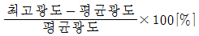
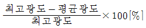
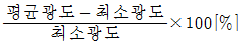
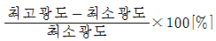
(정답률: 65%)
6. 비례 적분 제어의 단점은?
- 사이클링을 일으킨다.
- 응답의 진동시간이 길다.
- 간헐 현상이 있다.
- 잔류 편차를 크게 일으킨다.
(정답률: 62%)
7. 100[cd]의 정광원 바로 밑 2[m] 되는 곳에 있는 반사율 80[%]인 백색판의 광속 발산도[rlx]는?
- 20
- 25
- 40
- 50
(정답률: 54%)
8. 100[cd]의 점광원으로부터 점 P의 평면상 조도[lx]는?
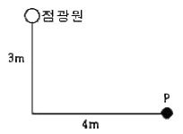
- 1.6
- 2.4
- 3.2
- 4
(정답률: 65%)
9. 어떤 트랜지스터의 정합(Junction)온도 Tj의 최대 정격값을 75[℃], 주위온도 Ta=35[℃]일 때의 컬렉터 손실 Pc의 최대 정격값을 10[W]라고 할 때 열저항[℃/W]은?
- 4
- 40
- 7.5
- 0.2
(정답률: 70%)
10. 온도 복사에 의하여 발광하는 등은?
- 네온관등
- 탄소아크등
- 형광등
- 백열등
(정답률: 51%)
11. 축전지의 용량을 표시하는 단위는?
- [J]
- [Wh]
- [Ah]
- [VA]
(정답률: 87%)
12. 전기 철도의 직접적인 효과로 볼 수 없는 것은?
- 수송 능력의 증대
- 수송 원가 절감
- 에너지 사용 증가
- 환경 개선
(정답률: 74%)
13. 40[t]의 전차가 40/1000 의 구배를 올라가는데 필요한 견인력[kg]은? (단, 열차저항은 무시한다.)
- 1000
- 1200
- 1400
- 1600
(정답률: 66%)
14. 제너 다이오드(Zener diode)의 용도로 가장 타당한 것은?
- 고압 정류용
- 검파용
- 정전압용
- 전파 정류용
(정답률: 79%)
15. 대기 중에 많이 있는 질소를 얻기 위하여 주로 사용되는 전기로에 해당되지 않는 것은?
- 에루(Heroult)로
- 파울링(Pauling)로
- 비르켈랜드-아이데(Bireland-Eyde)로
- 쉰헤르(Schonherr)로
(정답률: 60%)
16. 출력이 입력에 전혀 영향을 주지 못하는 제어는?
- 프로그램 제어
- 되먹임 제어
- 열린 루프제어
- 닫힌 루프제어
(정답률: 67%)
17. 플라이휠의 직경을 D[m], 중량을 G[kg]라고 할때, 플라이휠 효과(fly-wheel effect)를 구하는 식은?
- 1/2 GD2
- 1/4 GD2
- 1/8 GD2
- GD2
(정답률: 62%)
18. 금속의 전기저항이 온도에 의하여 변화하는 것을 이용한 온도계는?
- 광 고온계
- 방사 고온계
- 저항 온도계
- 열전 온도계
(정답률: 71%)
19. 단면적 0.5[m2], 길이 10[m]의 원형봉상도체의 한쪽을 400[℃]로 하고 이로부터 100[℃]의 다른 단자로 매시간 40[kcal]의 열이 전도되었다면 이 도체의 열전도율[kcal/mh℃]은?
- 267
- 26.7
- 2.67
- 0.267
(정답률: 47%)
20. 방전용접 중 불활성 가스용접에 쓰이는 가스는?
- 아르곤
- 수소
- 산소
- 질소
(정답률: 74%)
2과목: 전력공학
21. 지중 케이블에서 고장점을 찾는 방법이 아닌 것은?
- 머리 루프(Murray loop) 시험기에 의한 방법
- 메거(Megger)에 의한 측정 방법
- 임피던스 브리지법
- 펄스에 의한 측정법
(정답률: 37%)
22. 출력 20kW의 전동기로 총양정 10m, 펌프효율 0.75일 때 양수량은 몇 m3/min 인가?
- 9.18
- 9.85
- 10.31
- 15.5
(정답률: 28%)
23. 다음 중 전력계통에서 인터록(interlock)의 설명으로 적합한 것은?
- 차단기가 열려 있어야만 단로기를 닫을 수 있다.
- 차단기가 닫혀 있어야만 단로기를 닫을 수 있다.
- 차단기의 접점과 단로기의 접점이 동시에 투입할 수 있다.
- 차단기와 단로기는 각각 열리고 닫힌다.
(정답률: 47%)
24. 선로 정수를 전체적으로 평행되게 만들어서 근접 통신선에 대한 유도 장해를 줄일 수 있는 방법은?
- 연가를 한다.
- 딥(dip)을 준다.
- 복도체를 사용한다.
- 소호 리액터 접지를 한다.
(정답률: 44%)
25. 어떤 고층건물의 총 부하 설비전력이 400kW, 수용률 0.5 일 때 이 건물의 변전시설 용량의 최저값은 몇 kVA 인가? (단, 부하의 역률은 0.8이다.)
- 150
- 200
- 250
- 300
(정답률: 40%)
26. 그림에서와 같이 부하가 균일한 밀도로 도중에서 분기되어 선로전류가 송전단에 이를수록 직선적으로 증가할 경우 선로 말단의 전압강하는 이 송전단 전류와 같은 전류의 부하가 선로의 말단에만 집중되어 있을 경우의 전압강하 보다 대략 어떻게 되는가? (단, 부하역률은 모두 같다고 한다.)
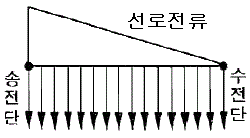
- 1/3 로 된다.
- 1/2 로 된다.
- 동일하다.
- 1/4 로 된다.
(정답률: 38%)
27. 다음 중 조상(調相) 설비에 해당되지 않는 것은?
- 분로 리액터
- 동기 조상기
- 상순(相順) 표시기
- 진상 콘덴서
(정답률: 46%)
28. 피뢰기의 제한전압이란?
- 상용주파전압에 대한 피뢰기의 충격방전 개시전압
- 충격파 침입시 피뢰기의 충격방전 개시전압
- 피뢰기가 충격파 방전 종료 후 언제나 속류를 확실히 차단할 수 있는 상용주파 최대전압
- 충격파 전류가 흐르고 있을 때의 피뢰기 단자전압
(정답률: 41%)
29. 수력발전소에서 서보 모터(servo-motor)의 작용으로 옳게 설명한 것은?
- 축받이 기름을 보내는 특수 전동펌프이다.
- 안내날개를 조절하는 장치이다.
- 전기식 조속기용 특수 전동기이다.
- 수압관 하부의 압력조정장치이다.
(정답률: 36%)
30. 차단기와 차단기의 소호 매질이 틀리게 결합된 것은 어느 것인가?
- 공기차단기-압축공기
- 가스차단기-냉매
- 자기차단기-전자력
- 유입차단기-절연유
(정답률: 48%)
31. 송전선의 전압변동률의 식은
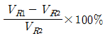
로 표현된다. 이 식에서 VR1은 무엇인가?- 무부하시 송전단전압
- 부하시 송전단전압
- 무부하시 수전단전압
- 부하시 수전단전압
(정답률: 36%)
32. 등가 송전선로의 정전용량 C=0.008[㎌/㎞], 선로길이 L=100[㎞], 대지전압 E=37000[V]이고, 주파수 f=60[㎐]일 때, 충전전류는 약 몇 [A] 인가?
- 11.2
- 6.7
- 0.635
- 0.426
(정답률: 31%)
33. 3상 1회선 전선로에서 대지정전용량을 Cs[F/m], 선간 정전용량을 Cm[F/m]이라 할 때, 작용정전용량 Cn[F/m]은?
- Cs + Cm
- Cs + 2Cm
- Cs + 3Cm
- 2Cs + Cm
(정답률: 49%)
34. 철탑에서의 차폐각에 대한 설명 중 옳은 것은
- 차폐각이 클수록 보호 효율이 크다.
- 차폐각이 작을수록 건설비가 비싸다.
- 가공지선이 높을수록 차폐각이 크다.
- 차폐각은 보통 90° 이상이다.
(정답률: 35%)
35. 주상변압기의 1차측 전압이 일정할 경우 2차측 부하가 변하면, 주상변압기의 동손과 철손은 어떻게 되는가?
- 동손과 철손이 모두 변한다.
- 동손과 철손은 모두 변하지 않는다.
- 동손은 변하고 철손은 일정하다.
- 동손은 일정하고 철손이 변한다.
(정답률: 39%)
36. 수전단전압 66kV, 전류 100A, 선로저항 10Ω, 선로리액턴스 15Ω인 3상 단거리 송전선로의 전압강하율은 몇 % 인가? (단, 수전단의 역률은 0.8이다.)
- 2.57
- 3.25
- 3.74
- 4.46
(정답률: 32%)
37. 전력원선도에서 구할 수 없는 것은?
- 조상용량
- 송전손실
- 정태안정 극한전력
- 과도안정 극한전력
(정답률: 35%)
38. 송전선에 낙뢰가 가해져서 애자에 섬락이 생기면 아크가 생겨 애자가 손상되는 경우가 있다. 이것을 방지하기 위하여 사용되는 것은?
- 댐퍼(damper)
- 아아모로드(armour rod)
- 가공지선
- 아킹혼(arcing horn)
(정답률: 44%)
39. 1상의 대지 정전용량이 0.5㎌이고 주파수 60Hz의 3상 송전선 소호 리액터의 인덕턴스는 몇 [H] 인가?
- 2.69
- 3.69
- 4.69
- 5.69
(정답률: 20%)
40. 다음 중 가스차단기(GCB)의 보호장치가 아닌 것은?
- 가스압력계
- 가스밀도 검출계
- 조작압력계
- 가스성분표시계
(정답률: 41%)
3과목: 전기기기
41. 3상 유도전동기에서 s=1일 때의 2차 유기기전력을 E2[V], 2차 1상의 리액턴스를 x2[Ω], 저항을 r2[Ω], 슬립을 s, 비례상수를 K0라고 하면 토크는?
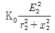
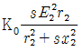
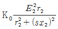
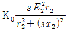
(정답률: 24%)
42. 3상 동기 발전기에서 권선 피치와 자극 피치의 비를 13/15의 단절권으로 하였을 때의 단절권 계수는?
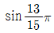
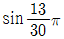
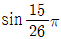
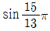
(정답률: 32%)
43. 단상 주상변압기의 2차측(1⑤[V]단자)에 1[Ω]의 저항을 접속하고, 1차측에 900[V]를 가하여 1차 전류가 1[A]라면, 1차측 탭 전압[V]은? (단, 변압기의 내부 임피던스는 무시한다.)
- 3350
- 3250
- 3150
- 3⑤0
(정답률: 39%)
44. 변압기 철심에서 자속변화에 의하여 발생하는 손실은?
- 와전류 손실
- 표유 부하손실
- 히스테리시스 손실
- 누설 리액턴스 손실
(정답률: 25%)
45. 직류 분권 발전기를 역회전하면?
- 발전되지 않는다.
- 정회전 때와 마찬가지다.
- 과대전압이 유기된다.
- 섬락이 일어난다.
(정답률: 32%)
46. 직류 발전기의 보극에 관한 설명 중 틀린 것은?
- 보극의 계자권선은 전기자권선과 직렬로 접속한다.
- 보극의 극성은 주자극의 극성을 회전방향으로 옮겨놓은 것과 같은 극성이다.
- 보극의 수는 주자극과 동일한 수이지만 어떤 경우에는 주자극의 수보다 적은 것도 있다.
- 보극에 의한 자속은 전기자전류에 비례하여 변화한다.
(정답률: 22%)
47. 사이리스터에서의 래칭 전류에 관한 설명으로 옳은 것은?
- 게이트를 개방한 상태에서 사이리스터 도통 상태를 유지하기 위한 최소의 순전류
- 게이트 전압을 인가한 후에 급히 제거한 상태에서 도통 상태가 유지되는 최소의 순전류
- 사이리스터의 게이트를 개방한 상태에서 전압을 상승하면 급히 증가하게 되는 순전류
- 사이리스터가 턴온하기 시작하는 순전류
(정답률: 32%)
48. 부하가 변하면 심하게 속도가 변하는 직류전동기는?
- 직권전동기
- 분권전동기
- 차동복권전동기
- 가동복권전동기
(정답률: 43%)
49. 다음 중 역률이 가장 좋은 전동기는?
- 단상유도전동기
- 3상유도전동기
- 동기전동기
- 반발전동기
(정답률: 31%)
50. 반파 정류회로에서 직류전압 200[V]를 얻는데 필요한 변압기 2차 상전압은 약 몇 [V]인가? (단, 부하는 순저항, 변압기내 전압강하를 무시하면 정류기내의 전압강하는 5[V]로 한다.)
- 68
- 113
- 333
- 455
(정답률: 35%)
51. 권선형 유도전동기에서 2차 저항을 변화시켜서 속도제어를 하는 경우 최대 토크는?
- 항상 일정하다.
- 2차 저항에만 비례한다.
- 최대 토크가 생기는 점의 슬립에 비례한다.
- 최대 토크가 생기는 점의 슬립에 반비례한다.
(정답률: 39%)
52. 직류기의 보상권선은?
- 계자와 병렬로 연결
- 계자와 직렬로 연결
- 전기자와 병렬로 연결
- 전기자와 직렬로 연결
(정답률: 28%)
53. 직류 분권 발전기를 병렬로 운전하는 경우 발전기용량 P와 정격전압 V 값은?
- P 와 V 모두 같아야 한다.
- P 는 임의, V 는 같아야 한다.
- P 는 같고, V 는 임의이다.
- P 와 V 모두 임의이다.
(정답률: 37%)
54. 권선형 3상 유도전동기가 있다. 2차 회로는 Y로 접속되고 2차 각 상의 저항은 0.3[Ω]이며, 1차, 2차 리액턴스의 합은 2차측에서 보아 1.5[Ω]이라 한다. 기동시에 최대 토크를 발생하기 위해서 삽입하여야 할 저항[Ω]은 얼마인가? (단, 1차 각 상의 저항은 무시한다.)
- 1.2
- 1.5
- 2
- 2.2
(정답률: 32%)
55. 유도전동기의 특성에서 토크 τ와 2차 입력 P2, 동기속도 Ns의 관계는?
- 토크는 2차 입력에 비례하고, 동기속도에 반비례 한다.
- 토크는 2차 입력과 동기속도의 곱에 비례 한다.
- 토크는 2차 입력에 반비례하고, 동기속도에 비례한다.
- 토크는 2차 입력의 자승에 비례하고, 동기속도의 자승에 반비례 한다.
(정답률: 30%)
56. 특수 동기기에 대한 설명 중 잘못 연결된 것은?
- 반작용 전동기 : 역률이 좋다.
- 유도 동기 전동기 : 기동 토크와 인입 토크가 크다.
- 동기 주파수 변환기 : 조작이 간편하고 효율이 좋다.
- 정현파 발전기 : 부하에 관계없이 정현파 기전력을 발생한다.
(정답률: 36%)
57. 그림에서 밀리암페어계의 지시[mA]를 구하면 얼마인가? (단, 밀리암페어계는 가동 코일형이고, 정류기의 저항은 무시한다.)
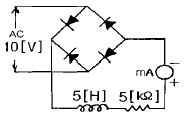
- 9
- 6.4
- 4.5
- 1.8
(정답률: 24%)
58. 변압기 2대로 출력 P[kW], 역률 cosθ의 3상 유도전동기에 V결선 변압기로 전력을 공급할 때 변압기 1대의 최소용량 [kVA]은?
- P / 3cosθ
- P / √3cosθ
- 3P / cosθ
- √3P / cosθ
(정답률: 39%)
59. 정격 150[kVA], 철손 1[kW], 전부하 동손이 4[kW]인 단상 변압기의 최대 효율[%]과 최대 효율시의 부하[kVA]는? (단, 부하역률은 1이다.)
- 96.8[%], 152[kVA]
- 97.4[%], 75[kVA]
- 97[%], 50[kVA]
- 97.2[%], 100[kVA]
(정답률: 37%)
60. 백분율 저항강하 2[%], 백분율 리액턴스강하 3[%]인 변압기가 있다. 역률(지역률) 80[%]인 경우의 전압 변동률[%]은?
- 1.4
- 3.4
- 4.4
- 5.4
(정답률: 41%)
4과목: 회로이론
61. 데브낭의 정리와 쌍대 관계에 있는 정리는?
- 보상의 정리
- 노톤의 정리
- 중첩의 정리
- 밀만의 정리
(정답률: 38%)
62. 구형파의 파고율은 얼마인가?
- 1.0
- 1.414
- 1.732
- 2.0
(정답률: 39%)
63. 라플라스 변환함수 1/s(s+1) 에 대한 역라플라스 변환은?
- 1+e-t
- 1-e-t
- 1 / 1-e-t
- 1 / 1+e-t
(정답률: 27%)
64. 정전용량 C만의 회로에서 100[V], 60[Hz]의 교류를 가했을 때 60[mA]의 전류가 흐른다면 C는 몇 [㎌]인가?
- 5.26[㎌]
- 4.32[㎌]
- 3.59[㎌]
- 1.59[㎌]
(정답률: 33%)
65. 불평형 3상전류 Ia=10+j2[A], Ib=-20-j24[A], Ic=-5+j10[A] 일 때의 영상전류 I0 값은 얼마인가?
- 15+j2[A]
- -5-j4[A]
- -15-j12[A]
- -45-j36[A]
(정답률: 30%)
66. 그림과 같은 평형 3상 Y형 결선에서 각 상이 8Ω의 저항과 6Ω의 리액턴스가 직렬로 접속된 부하에 선간전압 100√3[V]가 공급되었다. 이때 선전류는 몇 [A]인가?
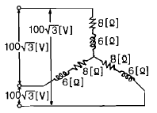
- 5
- 10
- 15
- 20
(정답률: 46%)
67. 대칭 좌표법에서 사용되는 용어 중 3상에 공통된 성분을 표시하는 것은?
- 공통분
- 정상분
- 역상분
- 영상분
(정답률: 40%)
68. 어떤 사인파 교류전압의 평균값이 191[V]이면 최대값은 약 몇 [V]인가?
- 150
- 250
- 300
- 400
(정답률: 26%)
69. 그림과 같은 회로에서 인가 전압이 의한 전류 i를 입력, Vo를 출력이라 할 때 전달 함수는? (단, 초기조건은 모두 0이다.)
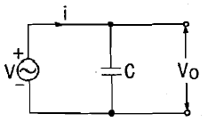
- 1/Cs
- Cs
- 1/1+Cs
- 1+Cs
(정답률: 28%)
70. 코일에 단상 100V의 전압을 가하면 30A의 전류가 흐르고 1.8kW의 전력을 소비한다고 한다. 이 코일과 병렬로 콘덴서를 접속하여 회로의 합성 역률을 100%로 하기위한 용량 리액턴스는 대략 몇 [Ω]이어야 하는 가?
- 1.2
- 2.6
- 3.2
- 4.2
(정답률: 19%)
71. 회로에서 저항 15[Ω]에 흐르는 전류는 몇 [A]인가?
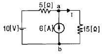
- 8
- 5.5
- 2
- 0.5
(정답률: 37%)
72. 그림과 같은 회로에서 eo[V]의 위상은 ei[V]보다 어떻게 되는가?
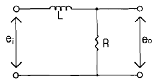
- 앞선다.
- 뒤진다.
- 동상이다.
- 90° 앞선다.
(정답률: 40%)
73. 그림에서 e(t)=Emcosωt의 전원전압을 인가했을 때 인덕턴스 L에 축적되는 에너지 [J]는?
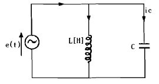
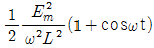
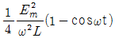
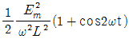
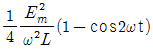
(정답률: 17%)
74. L형 4단자 회로망에서 4단자 정수가 A=15/4, D=1 이고 영상 임피던스 Z02가 12/5[Ω]일 때, 영상 임피던스 Z01[Ω]의 값은 얼마인가?
- 12
- 9
- 8
- 6
(정답률: 27%)
75. ø가 0에서 π까지는 i=20[A], π에서 2π까지는 i=0[A]인 파형을 푸리에 급수로 전개할 때 ao는?
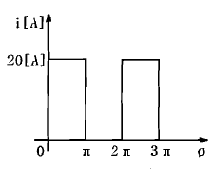
- 5
- 7.07
- 10
- 14.14
(정답률: 30%)
76. 어떤 제어계의 임펄스 응답이 sin t 일 때, 이 계의 전달함수를 구하면?
- 1 / s+1
- 1 / s2+1
- s / s+1
- s / s2+1
(정답률: 32%)
77.
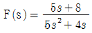
일 때 F(t)의 최종값은?- 1
- 2
- 3
- 4
(정답률: 45%)
78. RC직렬 회로의 과도현상에 관한 설명 중 옳게 표현된 것은?
- 과도 전류값은 RC 값에 상관이 없다.
- RC 값이 클수록 과도 전류값은 빨리 사라진다.
- RC 값이 클수록 과도 전류값은 천천히 사라진다.
- 1/RC 의 값이 클수록 과도 전류값은 천천히 사라진다.
(정답률: 37%)
79. 상순이 abc인 3상 회로에 있어서 대칭분 전압이 V0=-8+j3[V], V1=6-j8[V], V2=8+j12[V] 일 때 a상의 전압 Va[V]는?
- 6 + j7
- 8 + j12
- 6 + j14
- 16 + j4
(정답률: 38%)
80. 다음과 같은 회로에서 정 K형 저역 여파기(filter)에 해당되는 것은? (단, 인덕턴스는 L, 커패시턴스는 C 이다.)
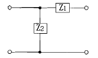
- Z1 이 L, Z2 가 C인 경우
- Z1 이 C, Z2 가 L인 경우
- Z1, Z2 모두가 C인 경우
- Z1, Z2 모두가 L인 경우
(정답률: 25%)
5과목: 전기설비
81. 고압 지중전선이 지중 약전류전선 등과 접근하여 이격거리가 몇 cm 이하인 때에는 양 전선사이에 견고한 내화성의 격벽을 설치하는 경우 이외에는 지중전선을 견고한 불연성 또는 난연성의 관에 넣어 그 관이 지중 약전류전선 등과 직접 접촉되지 않도록 하여야 하는가?
- 115
- 20
- 25
- 30
(정답률: 39%)
82. 케이블 트레이 공사에 사용하는 케이블 트레이에 적합하지 않은 것은?
- 케이블 트레이의 안전율은 1.5 이상이어야 한다.
- 지지대는 트레이 자체 하중과 포설된 케이블 하중을 충분히 견딜 수 있는 강도를 가져야 한다.
- 전선의 피복 등을 손상시킬 돌기 등이 없이 매끈하여야 한다.
- 금속재의 것은 내식성 재료의 것으로 하지 않아도 된다.
(정답률: 49%)
83. 직류식 전기철도에서 가공으로 시설하는 배류선은 케이블인 경우 이외에는 지름 몇 mm의 경동선이나 이와 동등 이상의 세기 및 굵기의 것 이어야 하는가?
- 2.0
- 2.5
- 3.5
- 4.0
(정답률: 21%)
84. 저압 옥내배선용 전선의 굵기는 연동선을 사용할 때 일반적으로 몇 mm2 이상의 것을 사용하여야 하는가?
- 2.5
- 1
- 1.5
- 0.75
(정답률: 40%)
85. 고압 절연전선을 사용한 6600V 배전선이 안테나와 접근상태로 시설되는 경우 그 이격거리는 몇 cm 이상이어야 하는가?
- 60
- 80
- 100
- 120
(정답률: 34%)
86. 345kV의 가공송전선로를 평지에 건설하는 경우 전선의 지표상 높이는 최소 몇 m 이상이어야 하는가?
- 7.58
- 7.95
- 8.28
- 8.85
(정답률: 48%)
87. 뱅크용량이 20000kVA 인 전력용 커패시터에 자동적으로 전로로부터 차단하는 보호장치를 하려고 한다. 반드시 시설하여야 할 보호장치가 아닌 것은?
- 내부에 고장이 생긴 경우에 동작하는 장치
- 절연유의 압력이 변화할 때 동작하는 장치
- 과전류가 생긴 경우에 동작하는 장치
- 과전압이 생긴 경우에 동작하는 장치
(정답률: 35%)
88. 사용전압이 400V 미만인 저압 가공전선은 지름 몇 mm 이상의 절연전선이어야 하는가?
- 3.2
- 3.6
- 4.0
- 5.0
(정답률: 16%)
89. 사용 전압이 154kV 인 가공 송전선의 시설에서 전선과 식물과의 이격거리는 일반적인 경우에 몇 m 이상으로 하여야 하는가?
- 2.8
- 3.2
- 3.6
- 4.2
(정답률: 34%)
90. 백열전등 또는 방전등에 전기를 공급하는 옥내 전선로의 대지 전압의 최대값은 일반적으로 몇 V 인가?
- 150
- 300
- 400
- 600
(정답률: 44%)
91. 154kV 옥외 변전소의 울타리 최소 높이는 몇 m인가?
- 2.0
- 2.5
- 3.0
- 3.5
(정답률: 32%)
92. 전기부식방식 시설은 지표 또는 수중에서 1m 간격의 임의의 2점간의 전위차가 몇 V를 넘으면 안되는가?
- 5
- 10
- 25
- 30
(정답률: 28%)
93. 금속 덕트 공사에 의한 저압 옥내배선 공사 시설 기준에 적합하지 않는 것은?
- 금속 덕트에 넣은 전선의 단면적의 합계가 덕트의 내부 단면적의 20[%] 이하가 되게 하였다.
- 덕트 상호 및 덕트와 금속관과는 전기적으로 완전하게 접속했다.
- 덕트를 조영재에 붙이는 경우 덕트의 지지점간의 거리를 4[m] 이하로 견고하게 붙였다.
- 저압 옥내배선의 사용 전압이 400[V] 미만인 경우 덕트에는 제3종 접지공사를 한다.
(정답률: 38%)
94. 다음 중 지선의 시설 목적으로 적절하지 않은 것은?
- 유도장해를 방지하기 위하여
- 지지물의 강도를 보강하기 위하여
- 전선로의 안전성을 증가시키기 위하여
- 불평형 장력을 줄이기 위하여
(정답률: 33%)
95. 고압 가공전선로의 지지물로 철탑을 사용하는 경우 최대 경간은 몇 m 인가?
- 150
- 200
- 250
- 600
(정답률: 45%)
96. 전력보안 가공통신선(광섬유 케이블은 제외)을 조가 할 경우 조가용 선은?
- 금속으로 된 단선
- 알루미늄으로 된 단선
- 강심 알루미늄 연선
- 금속선으로 된 연선
(정답률: 23%)
97. 관등 회로란 무엇인가?
- 분기점으로부터 안정기까지의 전로
- 스위치로부터 방전등까지의 전로
- 스위치로부터 안정기까지의 전로
- 방전등용 안정기로부터 방전관까지의 전로
(정답률: 40%)
98. 변압기의 고압측 전로와의 혼촉에 의하여 저압 전로의 대지 전압이 150[V]를 넘는 경우에 2초 이내에 고압 전로를 자동 차단하는 장치가 되어 있는 6600/220[V] 배전 선로에 있어서 1선 지락 전류가 2A 이면 제2종 접지저항 값의 최대는 얼마인가?
- 50[Ω]
- 75[Ω]
- 150[Ω]
- 300[Ω]
(정답률: 27%)
99. 수소냉각식 발전기안의 수소 순도가 몇 % 이하로 저하한 경우에 이를 경보하는 장치를 시설해야 하는가?
- 65
- 75
- 85
- 95
(정답률: 49%)
100. 특고압 가공전선이 도로⦁횡단보도교⦁철도 또는 궤도와 제1차 접근 상태로 시설되는 경우 특고압 가공전선로는 제 몇 종 보안공사에 의하여야 하는가?
- 제1종 특고압 보안공사
- 제2종 특고압 보안공사
- 제3종 특고압 보안공사
- 제4종 특고압 보안공사
(정답률: 31%)